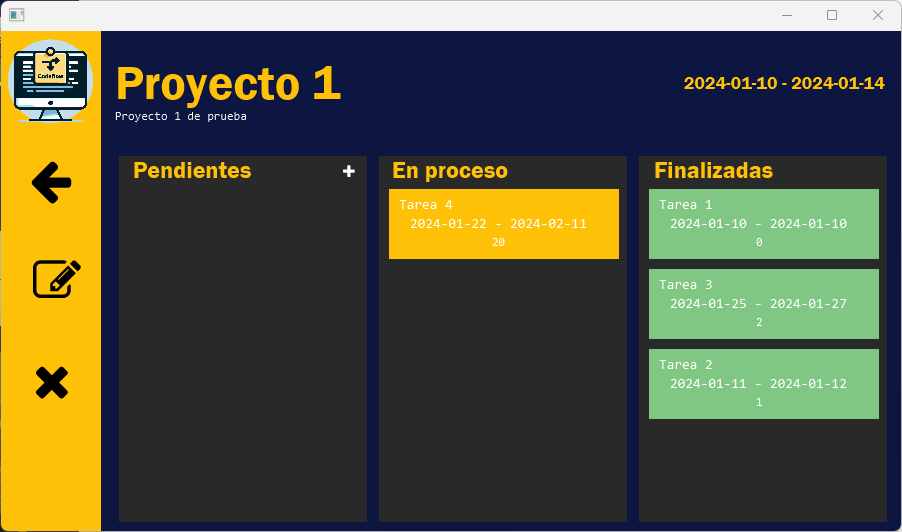
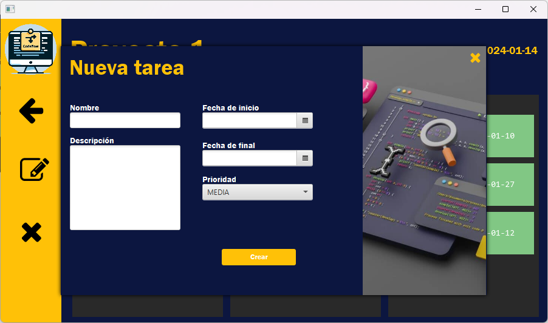
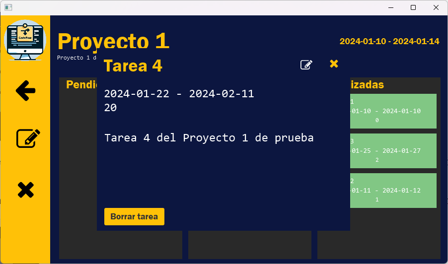

Las tareas representan las diferentes actividades que tenemos que realizar para completar un proyecto.
Se dividen en 3 grupos, las tareas pendientes, en proceso y finalizadas, que se estructuran automaticamente segun la fecha de inicio y de final que tengan. Las tareas a su vez se ordenan segun la prioridad.
Solamente podemos crear tareas pendientes, pulsando en el icono "+" sobre la columna de pendientes. Esto abrira un panel de creacion igual al de los proyectos pero para las tareas.
Las tareas iran cambiando de columna, segun las fechas que pongamos y la fecha actual.
Pulsando sobre una tarea podemos ver en detalle su informacion y podremos editarla o borrarla.
